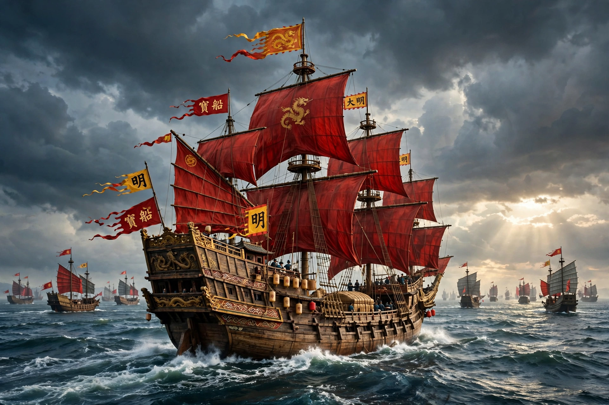

| Zheng He | |
|---|---|
 | |
| Born | 1371, Kunyang, Yunnan, China |
| Died | 1433 (or 1435) |
| Occupation | Admiral, explorer, diplomat, court eunuch |
| Known for | Seven treasure voyages (1405–1433) |
Zheng He (Chinese: 郑和; 1371–1433 or 1435) was a Chinese mariner, explorer, diplomat, fleet admiral, and court eunuch during China's early Ming dynasty. He was originally born as Ma He in a Muslim family and later became a close confidant of the Yongle Emperor — the third emperor of the Ming dynasty — who gave him the surname Zheng and sent him on a series of great naval expeditions.
Between 1405 and 1433, Zheng He commanded seven voyages of exploration, known in Chinese as the treasure voyages, to Southeast Asia, India, West Asia, and East Africa. His fleet consisted of hundreds of vessels, including enormous "treasure ships" (baochuan) far larger than any European ships of the era, carrying tens of thousands of men at its peak.
Ma He was born in 1371 in Kunyang, Yunnan, into a Hui Muslim family. In 1381, Ming forces invaded Yunnan; the young Ma He was captured, castrated, and placed in the service of the Prince of Yan, Zhu Di, who later usurped the throne as the Yongle Emperor. Ma He distinguished himself in military campaigns, notably at the Battle of Zhenglunba in 1399, after which he was granted the surname Zheng.
The seven voyages visited Champa, Siam, Malacca, Java, Sumatra, Ceylon, Calicut, Hormuz, Aden, and the East African coast as far as present-day Kenya. Zheng He's fleet exchanged gifts and envoys, established tributary relations, suppressed piracy — including the capture of the pirate Chen Zuyi at Palembang in 1407 — and intervened in local conflicts, as in Ceylon in 1410–1411. In 1415 the fleet brought back a giraffe from Malindi, which created a sensation at the Ming court, where it was identified with the mythical qilin.
Zheng He died during the seventh voyage, traditionally in 1433 near Calicut, and was reportedly buried at sea. After his death, the treasure voyages were discontinued as Ming policy turned inward. Zheng He is commemorated in temples in Southeast Asia and celebrated in modern China as a symbol of peaceful maritime outreach. His voyages predate Christopher Columbus's first voyage by nearly ninety years.